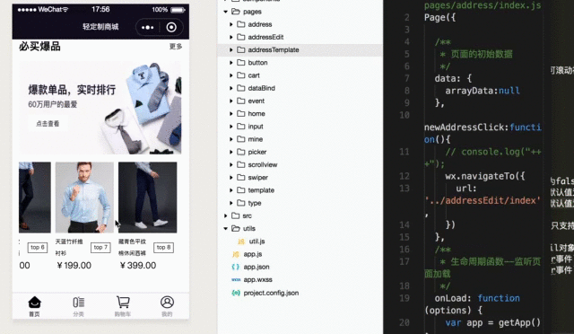
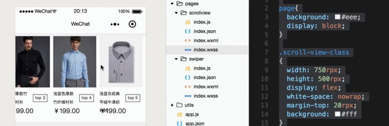

微信小程序基础[11]-小程序中的基础组件(三)
本文介绍小程序中的基础组件，主要包括swiper、scroll-view等组件的基本使用和综合示例。
1.0 swiper组件
swiper组件是小程序中使用频次最高的组件之一，属于视图容器类组件，它通过对自身属性进行简单配置就可以实现在前端开发中要写很多代码才能完成的轮播图效果。
随手截取几个小程序中swiper组件的使用情况，给出贴图。

这里列出swiper组件的主要属性
autoplay 是否自动切换，布尔类型，默认值为false。
circular 是否采用衔接滑动，布尔类型，默认值为false。
duration 控制滑块的动画时间，数值类型，默认值为500，单位是毫秒。
interval 控制自动切换的时间间隔，数值类型，默认值为5000，单位是毫秒。
vertical 控制滑块是否为纵向，布尔类型，默认值为false，设置为true表示纵向。
indicator-color显示面板指示点的默认颜色。
indicator-active-color当前选中(显示)的面板指示点的颜色。
indicator-dots 是否显示面板指示点，布尔类型，默认值为false表示不显示。
current当前所在滑块的索引(index)，数值类型，默认值为0，可以指定。
display-multiple-items 能够同时显示的滑块数量，数值类型，默认能同时只能显示1个滑块。
bindchange 当滑块的current改变时会触发该事件并执行绑定的方法，事件类型。
bindanimationfinish 当滑块动画结束的时候会触发该事件并执行绑定的方法，事件类型。
备注001 该组件中其它的诸如previous-margin（前边距）| next-margin（后边距） | skip-hidden-item-layout（是否跳过未布局滑块）|current-item-id（当前滑块所在的item-id）等不常用属性请自行查阅官方文档。
备注002 swiper-item 该组件可以且仅可放置在
这里我们以”花点时间的店”这个小程序的轮播图的实现为例给出示例代码
1 | //001 wxml文件中的代码 |
1 | //002 wxss文件中的样式设置 |
1 | //003 js文件中的代码 |
这里给出上面的代码编译后在小程序中呈现的效果图。

2.0 scroll-view组件
scroll-view是小程序中的可滚动视图组件，支持竖向滚动和横向滚动，这里给出该组件在商业小程序中的应用示意图。
列出scroll-view组件的主要属性
scroll-x 允许横向滚动，布尔类型，默认值为false。
scroll-y 允许纵向滚动，布尔类型，默认值为false。
scroll-top 设置竖向滚动条的位置，数值类型。
scroll-left 设置横向滚动条的位置，数值类型。
scroll-with-animation 在设置滚动条位置时使用动画过渡，布尔类型，默认值为false。
upper-threshold 距顶部/左边多远时（单位px），触发scrolltoupper事件，默认值为50。
lower-threshold 距底部/右边多远时（单位px），触发scrolltolower事件，默认值为50。
scroll-into-view 其值应为某子元素id，表示在特定的方向上滚动到该元素。
enable-back-to-top iOS点击顶部状态栏、安卓双击标题栏时，滚动条返回顶部，只支持竖向。
bindscroll 当组件滚动的时候会触发该事件，相关的数据保存在event.detail对象中。
bindscrolltoupper 当组件滚动到顶部/左边的时候会触发scrolltoupper事件。
bindscrolltolower 当组件滚动到底部/右边的时候会触发scrolltolower事件。
这里我们给出实现上面滚动效果的代码示例
1 | //001 wxml文件中的内容 |
1 | //002 wxss文件中的内容 |
1 | //003 js文件中的内容 |
这里贴出最终实现的效果图。
